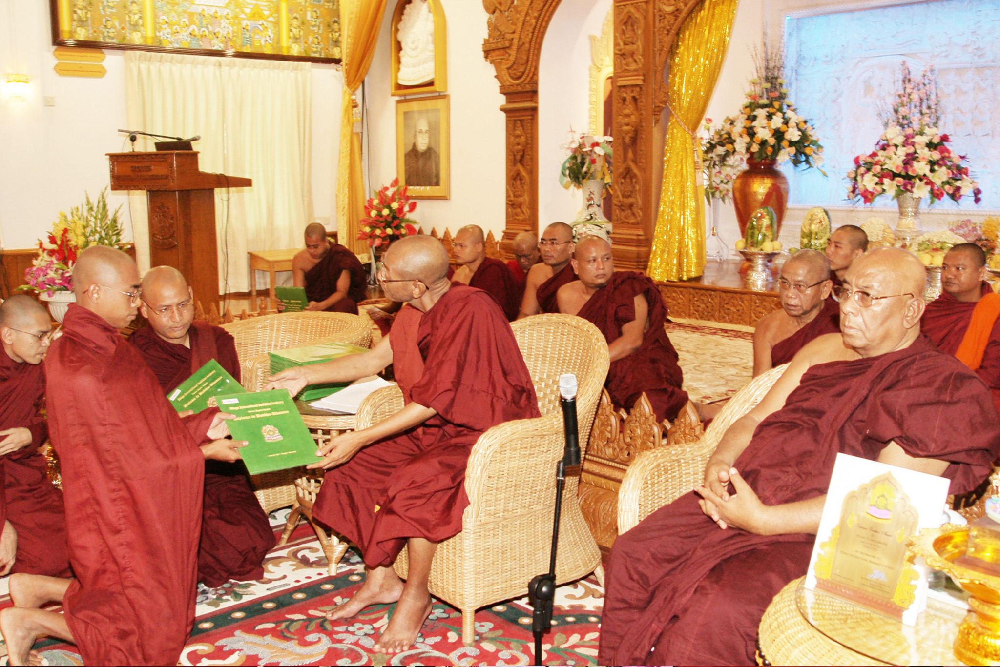
ဘွဲ့အပ်နှံပေးတော်မူခဲ့ကြသည့် ဆရာတော်ကြီး ၃ ပါး
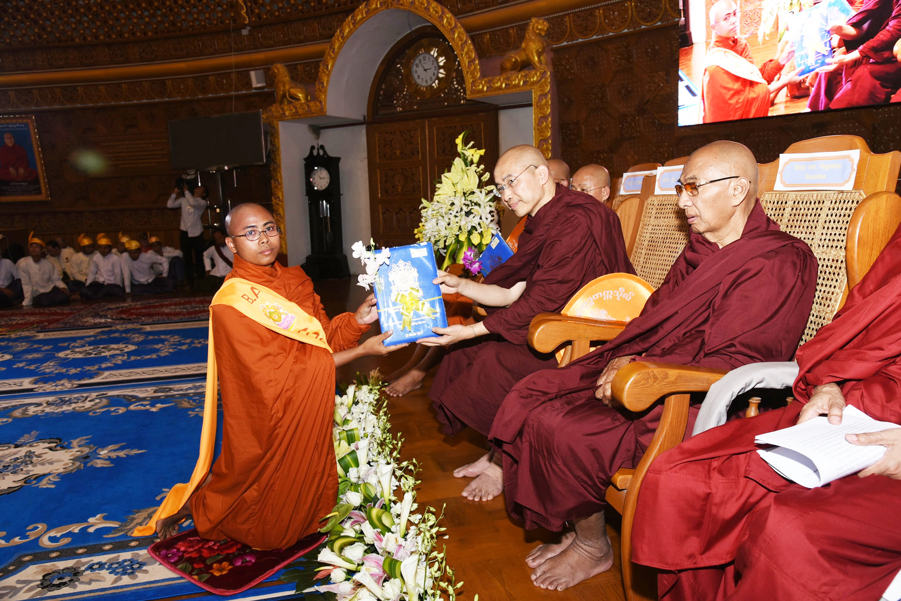
ဒေါက်တာဘဒ္ဒန္တဓမ္မသာမိ(Oxford)မှ B.Aဘွဲ့လက်မှတ်အပ်နှံနေစဉ်
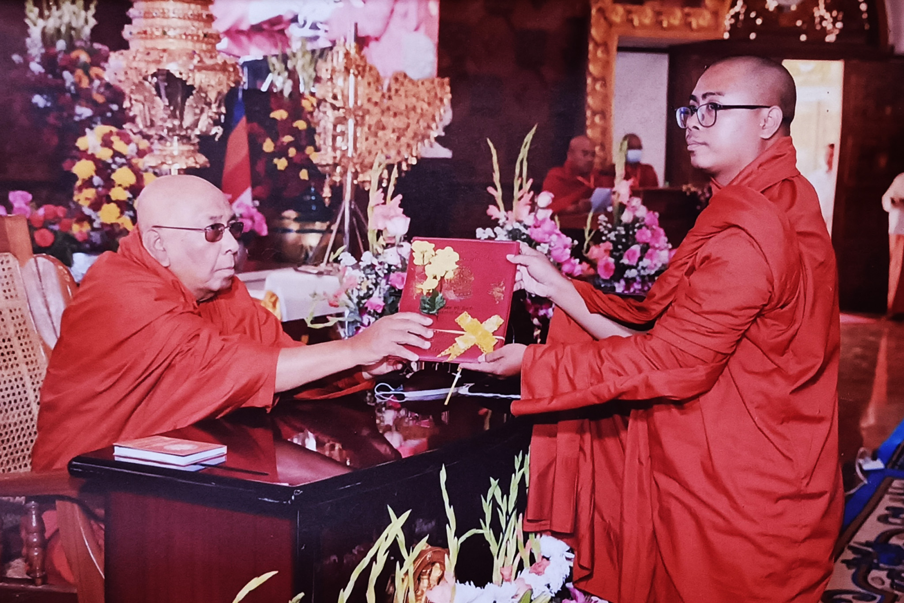
သီတဂူဆရာတော်ကြီးမှ M.A ဘွဲ့လက်မှတ် ပေးအပ်နေစဉ်
ထေရုပ္ပတ္တိအကျဉ်း
အရှင်ပညာသိရီသည် ပဲခူးတိုင်းဒေသကြီး၊ ညောင်လေးပင်မြို့နယ်၊ မြို့မ (၅ )ရပ်ကွက်နေ (ဦးမောင်မြင့် + ဒေါ်ခင်ရဲလွင်)တို့မှ ၁၃၄၆ ခုနှစ်၊ ဝါခေါင်လဆုတ် ၁၂ ရက်၊ ကြာသပတေးနေ့ နံနက် ၆ နာရီတွင် ဖွားမြင်သည်။ မွေးချင်း ၆ ယောက်အနက် အငယ်ဆုံး သားရတနာဖြစ်ပြီး ငယ်အမည်မှာ ဘိုဘို (ခေါ်) ဘိုမြင့်လွင် ဖြစ်သည်။ ညောင်လေးပင်မြို့၊ အစိုးရမူလတန်းကျောင်းနှင့် ပါဠိသိပ္ပံ ဘ/က ကျောင်းတို့တွင် အတန်းပညာအောင်မြင်ပြီးနောက် ကိုးနှစ်သားအရွယ်တွင် ပဲခူးတိုင်းဒေသကြီး၊ ညောင်လေးပင်မြို့နယ်၊ ကုသိနာရုံပါဠိသိပ္ပံဆရာတော် ဘဒ္ဒန္တတေဇိန္ဒမဟာထေရ်မြတ်ကို ဉပေဇ္ဈာယ်ပြု မယ်တော် ဒေါ်ခင်ရဲလွင်(ဒေါ်ရဲ)၏ ပစ္စယာနုဂ္ဂဟကို ခံယူကာ ရှင်သာမဏေအဖြစ်သို့ ရောက်ရှိသည်။ ရှင်သာမဏေဘဝဖြင့် မူလဉပေဇ္ဈာယ်ဆရာတော်ထံ၌ ပရိယတ္တိအခြေခံစာပေများကို လေ့လာဆည်းပူးပြီးနောက် ရန်ကုန်တိုင်းဒေသကြီး၊ ဗဟန်းမြို့နယ်၊ ရွှေဟင်္သာသီရိမန္တစံကျောင်း စာသင်တိုက်၊ ရွှေဟင်္သာမဟာဗောဓိစာသင်တိုက်၊ တောင်ဥက္ကလာပမြို့နယ်၊ အောင်ပင်လယ်စာသင်တိုက်၊ မွန်ပြည်နယ်၊ မော်လမြိုင်မြို့၊ မန်ကျည်းတောရွှေကျောင်း စာသင်တိုက်တို့တွင် သာမဏေကျော်(ပထမဆင့်)၊ အစိုးရပထမပြန် မူလတန်း၊ အငယ်တန်း၊ အလတ်တန်းနှင့် အကြီးတန်းတို့ကို တက်ရောက် သင်ယူခဲ့သည်။သာသနာတော်နှစ် ၂၅၄၆ ခု၊ ကောဇာသက္ကရာဇ် ၁၃၆၅ ခု၊ တန်ခူးလဆုတ် ၈ ရက်၊ သောကြာနေ့တွင် ကုသိနာရုံပါဠိသိပ္ပံဆရာတော်ကြီးကိုပင် ဉပေဇ္ဈာယ်ပြု၍ ညောင်လေးပင်မြို့နယ်၊ မုက္ခမူရွာနေ ဦးမင်းသိန်း + (ဒေါ်သန်းအေး) တို့၏ ပစ္စယာနုဂ္ဂဟကို ခံယူကာ ရှင်ရဟန်းအဖြစ်သို့ ရောက်ရှိခဲ့သည်။ အရှင်သည် အစိုးရပထမပြန် မူ ငယ် လတ် ကြီး တို့ကို အောင်မြင်ပြီးနောက် မော်လမြိုင်မြို့၊ ကောလှပ်ဓမ္မာစရိယတက္ကသိုလ်တွင် ဓမ္မာစရိယတန်းစာဝါများကို လေ့လာဆည်းပူးခဲ့ပါသည်။
၂၀၀၅ ခုနှစ်၊ ရန်ကုန်သီတဂူဗုဒ္ဓတက္ကသိုလ် စာမေးပွဲ နှုတ်/ရေး ၂ ခုလုံး ဝင်ခွင့်အောင်မြင်သဖြင့် ၂၀၀၆ မှ ၂၀၁၅ အထိ ရန်ကုန်တိုင်းဒေသကြီး၊ တောင်ဥက္ကလာပမြို့နယ်၊ မြင်သာမြို့ဦးဘုန်းတော်ကြီးသင် ပညာကျောင်းတိုက်၌၎င်း၊ ၂၀၁၅ မှ ၂၀၁၇ အထိ အမှတ် ၅ ဝိုင်း၊ ဝေဇယန္တာကျောင်းတိုက်၌၎င်း သီတင်းသုံးတော်လျက် သီတဂူဗုဒ္ဓတက္ကသိုလ်(ရန်ကုန်)တွင် Diploma, B.A နှင့် M.A (ပထမနှစ်) တို့ကို တက်ရောက် ပညာဆည်းပူးခဲ့သည်။
၂၀၁၈ -၂၀၁၉ ပညာသင်နှစ်တွင် စစ်ကိုင်းမြို့၊ စစ်ကိုင်းတောင်ရိုး၊ သီတဂူကမ္ဘာ့ဗုဒ္ဓတက္ကသိုလ်တွင် အတွင်းနေ M.A(ဒုတိယနှစ်) စာသင်သားအဖြစ် သီတင်းသုံးခဲ့သည်။ ထိုတက္ကသိုလ်မှ M.A အောင်မြင်ပြီးနောက် ၂၀၁၉ - ၂၀၂၀ ခုနှစ်တွင် ရန်ကုန်၊ မြင်သာမြို့ဦးကျောင်းတိုက်တွင် ပြန်လည်သီတင်းသုံးတော်မူခဲ့သည်။
၂၀၂၀ ခုနှစ်တွင် ပဲခူးမြို့၊ ဓမ္မဒူတဗုဒ္ဓတက္ကသိုလ်တွင် ကျမ်းပြုခွင့်အောင်မြင်၍ အတွင်းနေ Ph.D စာသင်သားအဖြစ် သီတင်းသုံးလျက် ကျမ်းပြုစုခွင့်ရရှိခဲ့ပါသည်။ ၂၀၂၂ ခုနှစ်တွင် ၎င်းတက္ကသိုလ်မှ Master of Philosophy(M.Phil.) ကို အောင်မြင်ပြီးမြောက်ခဲ့ပြီးနောက် Ph.D(ပါရဂူ) ဒေါက်တာဘွဲ့အတွက် ဆက်လက်ကျမ်းပြုစုလျက်ရှိပါသည်။ ယခုအခါ အရှင်ပညာသိရီသည် ပဲခူးတိုင်းဒေသကြီး၊ ညောင်လေးပင်မြို့၊ မြို့မ ၁ ရပ်ကွက်၊ ဘုရားကြီးလမ်း၊ ကုသိနာရုံ ပါဠိသိပ္ပံကျောင်းတိုက်တွင် ပြန်လည်သီတင်းသုံးတော်မူလျက် ဒေါက်တာဘွဲ့ကျမ်းစာကို ဆက်လက်ရေးသားပြုစုလျက်ရှိပါသည်။
ဘွဲ့တံဆိပ်နှင့်အောင်လက်မှတ်များ
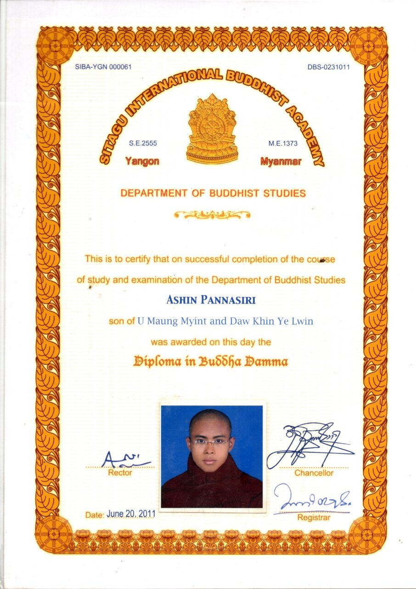
Diploma အောင်လက်မှတ်
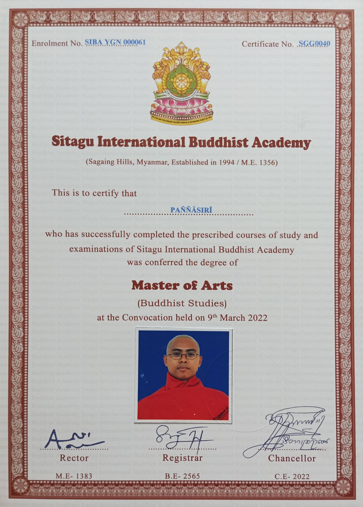
M.A ဘွဲ့လက်မှတ်
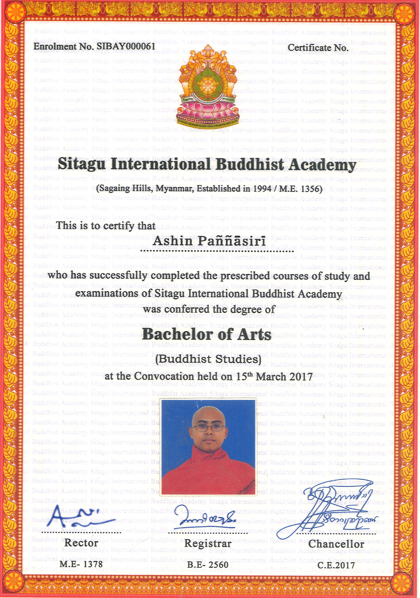
B.A ဘွဲ့လက်မှတ်
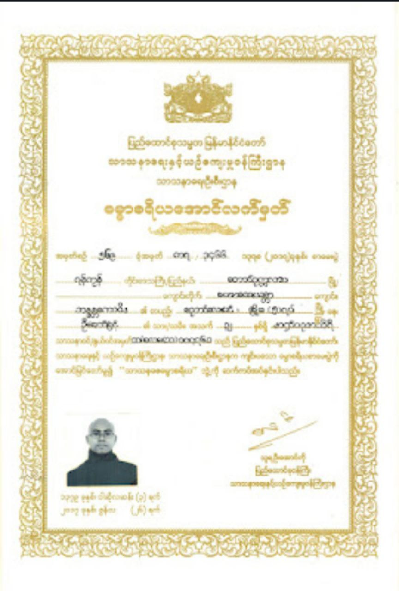
ဓမ္မာစရိယဘွဲ့လက်မှတ်
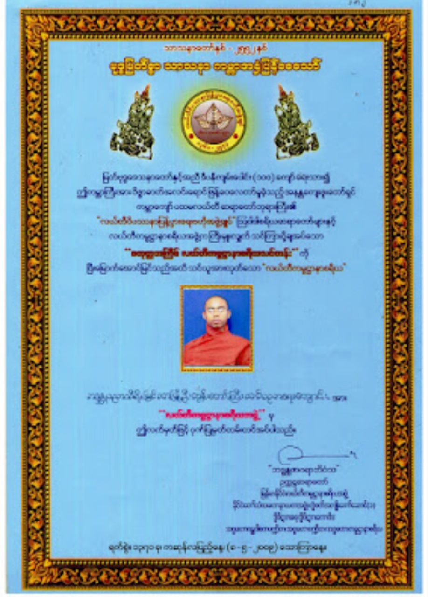
လယ်တီကမ္မဋ္ဌာနာစရိယ အောင်လက်မှတ်
အင်္ဂလိပ်စာ အောင်လက်မှတ်
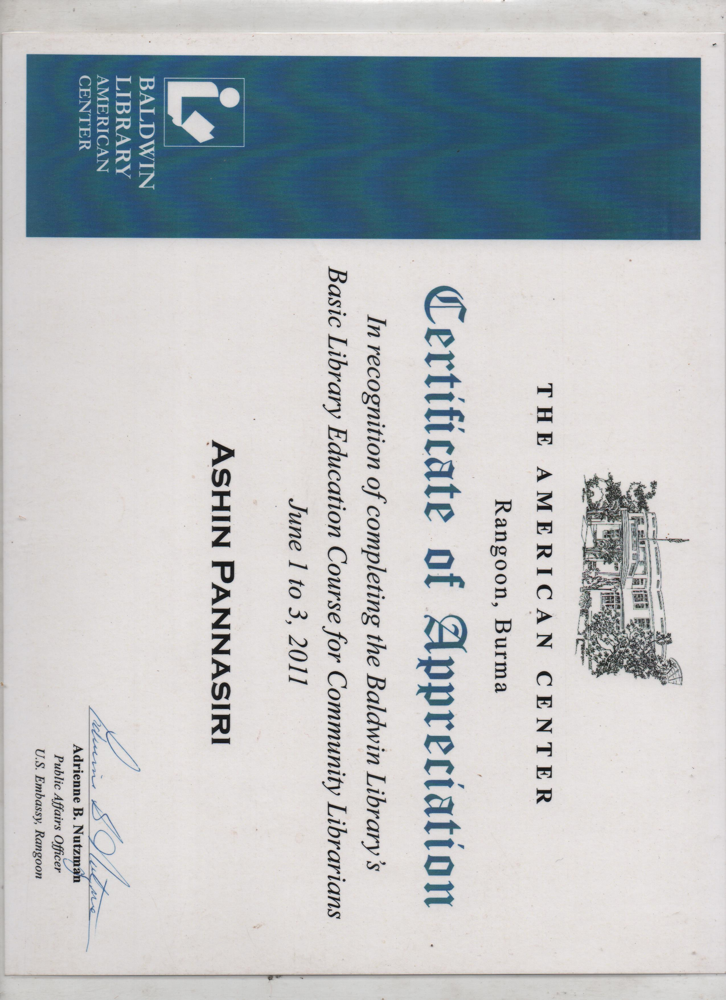
USA ပညာရေး အောင်လက်မှတ်
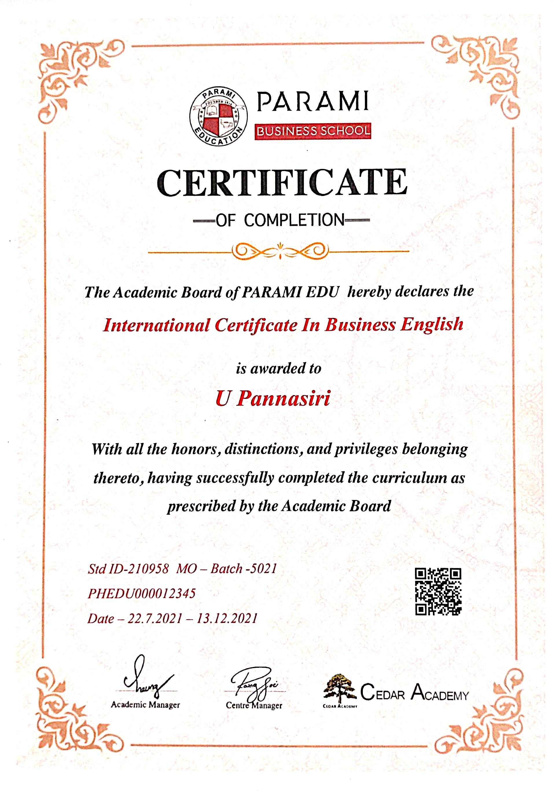
အင်္ဂလိပ်စာ အောင်လက်မှတ်
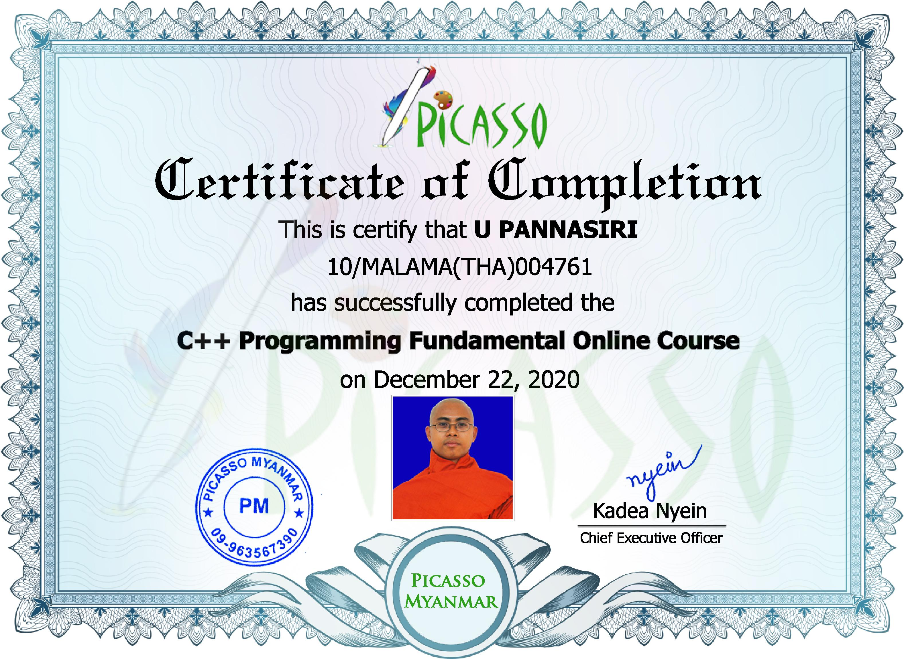
Programming အောင်လက်မှတ်
အောင်လက်မှတ်ရရှိခဲ့သည့် မှတ်တမ်းအကျဉ်း
• ၂၀.၆.၂၀၀၄ ခုနှစ်တွင် အမေရိကန်နိုင်ငံ ပညာရေးအဖွဲ့မှ ကြီးမှူးကျင်းပသော "M.S.L.(USA)" အောင်လက်မှတ်ကိုလည်းကောင်း၊• ၈.၅.၂၀၀၉ ခုနှစ်တွင် လယ်တီဝိပဿနာအဖွဲ့ချုပ်ကြီးမှ ကြီးမှူးဖွင့်လှစ်သော "ကမ္မဋ္ဌာနာစရိယ" လက်မှတ်ကိုလည်းကောင်း၊
• ၁၂.၁၀.၂၀၀၉ ခုနှစ်တွင် "RWCT(Edu)" လက်မှတ်ကိုလည်းကောင်း၊
• ၃.၆.၂၀၁၁ ခုနှစ်တွင် အမေရိကန်သံရုံးမှ ကျင်းပသော စာကြည့်တိုက်ပညာရပ် "Lib.Edu(USA)" အောင်လက်မှတ်ကိုလည်းကောင်း၊
• ၂၀.၆.၂၀၁၁ ခုနှစ်တွင် သီတဂူကမ္ဘာ့ဗုဒ္ဓတက္ကသိုလ်၊ ရန်ကုန်၊ "Diploma (Buddha -Dhamma)" ဘွဲ့အောင်လက်မှတ်ကိုလည်းကောင်း၊
• ၁၅.၃.၂၀၁၇ ခုနှစ်တွင် သီတဂူကမ္ဘာ့ဗုဒ္ဓတက္ကသိုလ်၊ ရန်ကုန်၊ "B.A.(Buddhadesana)"ဘွဲ့အောင်လက်မှတ်ကိုလည်းကောင်း၊
• ၂၀.၆.၂၀၁၇ ခုနှစ်တွင် ပြည်ထောင်စုသမ္မတမြန်မာနိုင်ငံတော်အစိုးရမှ ဆက်ကပ်သော "သာသနဓဇဓမ္မာစရိယ" ဘွဲ့အောင်လက်မှတ်ကိုလည်းကောင်း၊
• ၂၆.၆.၂၀၁၉ ခုနှစ်တွင် သီတဂူကမ္ဘာ့ဗုဒ္ဓတက္ကသိုလ်၊ စစ်ကိုင်း၊ "M.A(Buddhist Studies)"ဘွဲ့အောင်လက်မှတ်ကို ပထမဂုဏ်ထူးဖြင့် လည်းကောင်း၊
• ၂၀၂၀ - ၂၀၂၂ ခုနှစ်တွင် Network Technological Programming Language ဆိုင်ရာ အောင်လက်မှတ်များကိုလည်းကောင်း၊
• ၂၈.၂.၂၀၂၄ ခုနှစ်တွင် ဓမ္မဒူတဗုဒ္ဓတက္ကသိုလ်၊ ပဲခူး "M.Phil(Master of Philosophy)"ဘွဲ့ကိုလည်းကောင်း အသီးသီး အောင်မြင်တော်မူခဲ့ပါသည်။
Biography (English)
Ashin Pannasiri was born on Thursday, the 12th day of the waning moon of Wakhaung, 1346 ME, at 6:00 AM, in Myoma Ward (5), Nyaunglebin Township, Bago Region, to his father U Maung Myint and mother Daw Khin Ye Lwin. His birth name was Bobo (alias) Bo Myint Lwin.
After passing the government primary level, at the age of nine, he entered the order of novicehood (Samanera) under the preceptor (Upajjhaya) Most Ven. Bhaddanta Tejindamahathera, the presiding Sayadaw of Kushinara Palisippam Monastery, Nyaunglebin Township, Bago Region, with the devotional support (paccayanuggaha) of his mother, Daw Khin Ye Lwin. Having studied basic Pariyatti literature under his original preceptor, he successfully passed the government Primary, Junior, Middle, and Senior levels while residing and studying at various distinguished monasteries in Yangon, Mon State, and Bago Region.
On Friday, the 8th day of the waning moon of Tankhu, 1365 ME (Sasana Era 2546), he attained higher ordination (Bhikkhu) with the same preceptor. In 2005, he began his studies at the Sitagu Buddhist Academy in Yangon, where he earned his Diploma, B.A., and later, a Master of Arts (M.A.) degree in Buddhist Studies with First Class Honors from the Sitagu International Buddhist Academy, Sagaing, in 2019.
In 2020, he enrolled as a Ph.D. student at the Dhammaduta Buddhist University, Bago, and successfully earned a Master of Philosophy (M.Phil.) degree in 2022. Currently, Ashin Pannasiri resides at the Kushinara Palisippam Monastery, Nyaunglebin, where he continues to compile his doctoral dissertation.
Academic Qualifications & Certificates
- 2004: "M.S.L. (USA)" Certificate, American Educational Association.
- 2009: "Kammaṭṭhānācariya" Certificate, Ledi Vipassana Organization.
- 2009: "RWCT (Edu)" Certificate.
- 2011: "Lib.Edu (USA)" Library Science Certificate, U.S. Embassy.
- 2011: "Diploma (Buddha-Dhamma)" Sitagu International Buddhist Academy.
- 2017: "B.A. (Buddhadesana)" Sitagu International Buddhist Academy.
- 2017: "Sāsanadhaja Dhammācariya" Degree, Government of Myanmar.
- 2019: "M.A. (Master of Arts)" Sitagu International Buddhist Academy.
- 2020-2022: Network Technological Programming Language Certificates.
- 2024: "M.Phil (Master of Philosophy)" Dhammaduta Buddhist University.
ဆက်သွယ်ရန်
Phone: 09948011000
Email: upannasiri@hotmail.com
Website: https://upanna.github.io/
Address: Kusinaron Palisippam Monastery, Myo Ma .1, Phayargyi street, Nyaunglebin, Bago Division